Random test data support Overview
APIJockey TEST supports several options to provide random data in our tests:
- You enter your random data in a table editor where the data is stored inside your test definitions and APIJockey TEST will read a random row during the test run.
- You provide random value provider configuration i.e. you define simple rules inside a teststep that allows for random data generation
- You provide a CSV file where a random row will be used during test run.
Create a Manual RandomizedValuelist Teststep
Creates an empty table of rows and columns and randomizes data in this table to provide variables values. You may edit rows and columns and apply formatting.
Steps to create a manual RandomizedValuelist Teststep
Select the button create new RandomizedValuelist teststep with manual data entry
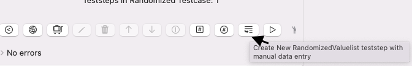
This opens a dialog that allows you to enter the name of the teststep. You can choose to enter this name at any point later in time.
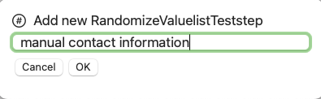
When you confirm with OK the dialog disappears and creates a new entry in the teststep list. Cancel dismisses without creating the teststep.
When you select the new teststep, the Manual RandomizedValuelist Teststep editor opens. See details to edit the randomized list value in Manual Randomizedvaluelist Teststep View
If you have a CSV file that you want to import, you may want to Create a RandomizedValuelist Teststep
Create a Randomize Teststep with a Random Value Provider
This walkthrough shows you, how to create a Randomizeteststep and define a Randomvalueprovider that provides random, in this case a simplified Vehicle Identification Number (VIN)
Step 1: Create a RandomizeTeststep
Select the button create new RandomizedValuelist teststep with manual data entry
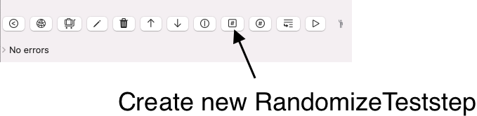
This opens a dialog that allows you to enter the name of the teststep. You can choose to enter this name at any point later in time.
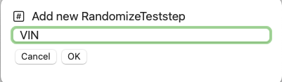
When you confirm with OK the dialog disappears and creates a new entry in the teststep list. Cancel dismisses without creating the teststep.
When you select the new test step, the RandomizeTeststep editor opens. See details to edit the randomized list value in RandomizeTeststep View The RandamizeTeststep displays an empty list of RandomValueProviders and, if selected the editor to configure the random value provider.
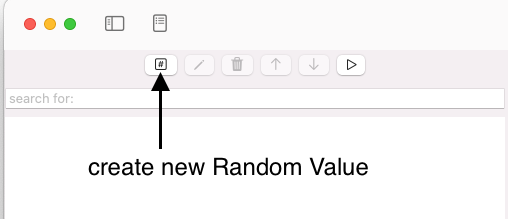
Step 2: Create a RandomValueProvider for a simplified VIN
We want to create ONE RandomValueProvider in this RandomizeTeststep that provides random VINs The VIN:
- starts with WDB
- contains 14 subsequent alphanumerical characters
We want to store this random VIN in a testcase variable vin, which we need to create.
Click with your mouse on the button create new random value and enter the name VIN (Vehicle Identification number). We will create a simplified VIN-generator that is sufficient for our purposes. Select the string random value provider - entry VIN. This opens the StringRandomvalueProvider editor.
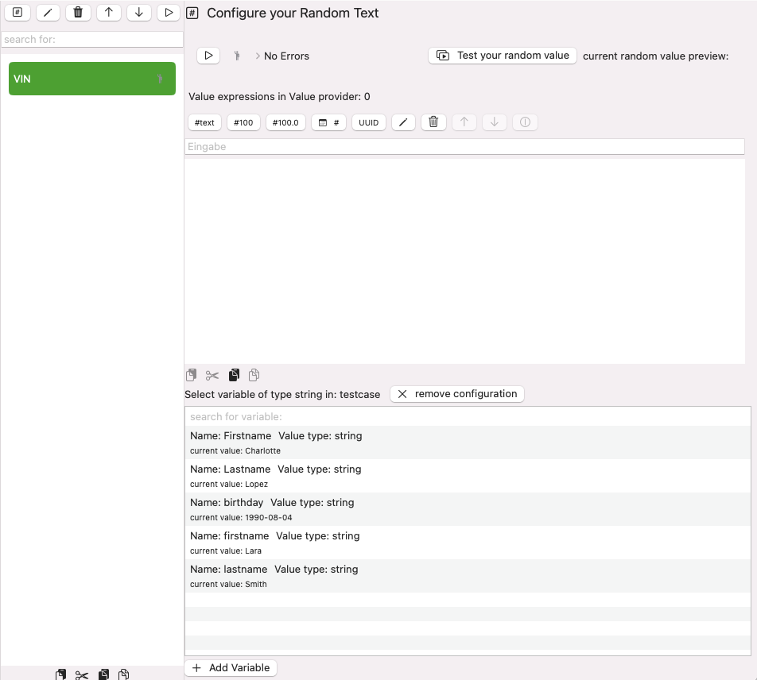
Click with your mouse on the button create new String random value (#text). This opens a dialog for the element to be created.
Insert the name WDB and confirm with OK. This will insert a new expression value, which we need to select to edit it.
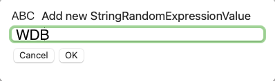
When you select your WDB expression, you will see an editor on the right side, with some defaults. We keep them for the moment. Click with your mouse on the button Test your randomValue to see the outcome. The random value is displayed besides the text current random value preview:. this is not yet want we wanted. We set the value expression type to fixed and set the included characters to WDB. and test again our randomValue.
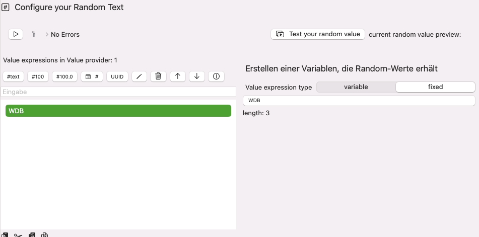
Click again with your mouse on the button #text. This opens a dialog for the element to be created. Enter the name VINtail and confirm with OK. This will insert a new element, which we need to select to edit it. Edit the value expression as follows
- included values ABCDEFGHIJKLMNOP123456789
- number of random characters 14
- make sure the VINtail comes after the WDB. You may use move up or move down.
- Click with your mouse on the button Test your randomValue to see the outcome. The random value is displayed besides the text current random value preview:.
This would give following result: 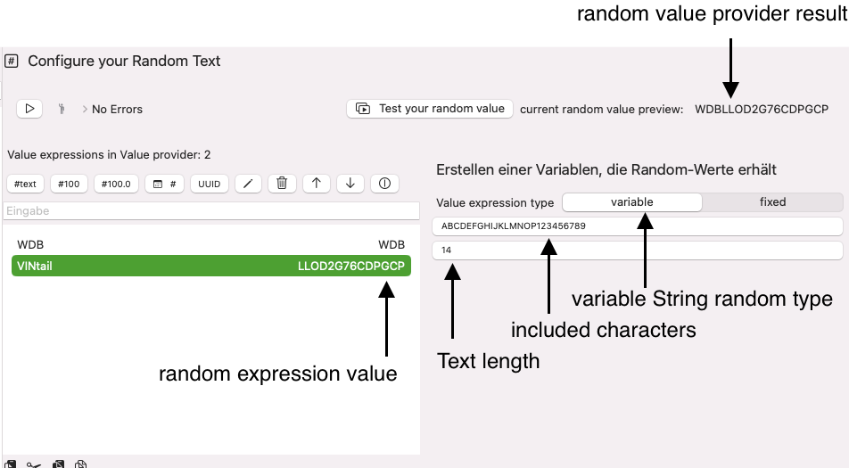
Step 3: Reference a testcase variable
The command Test your random value lets you verify, if the definition works as desired. To use this definition. you must link a variable to the RandomValueProvider. This is done with the VariableValueTransfer view. Let's create this here.
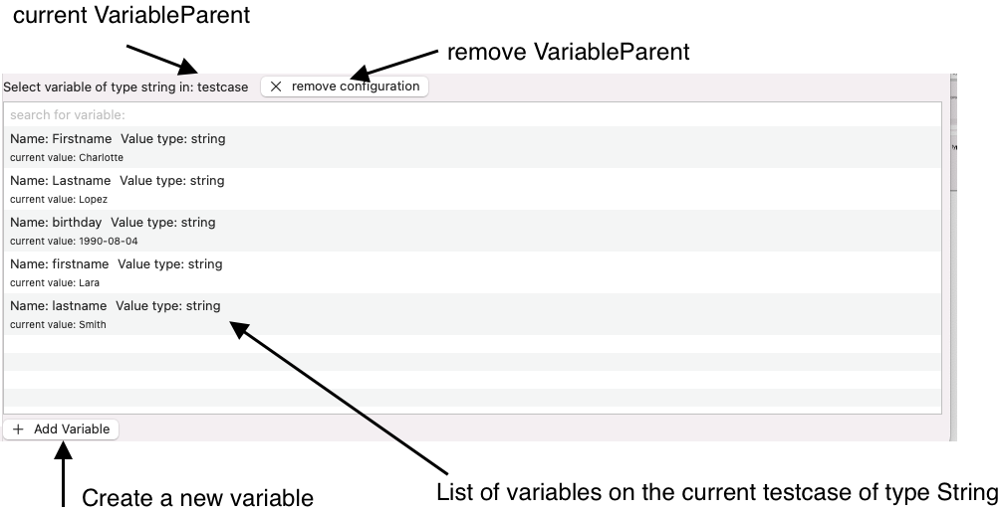
We add a new variable with name VIN on the testcase and connect it to our RandomValueProvider.
Click with your mouse on Add Variable. A dialog opens where you can edit the name and (optionally) the value. We'll keep the value at it is. Enter the name VIN
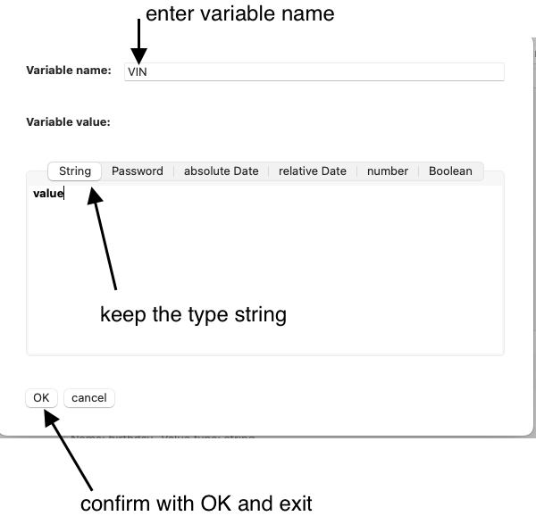
You will see the new variable. 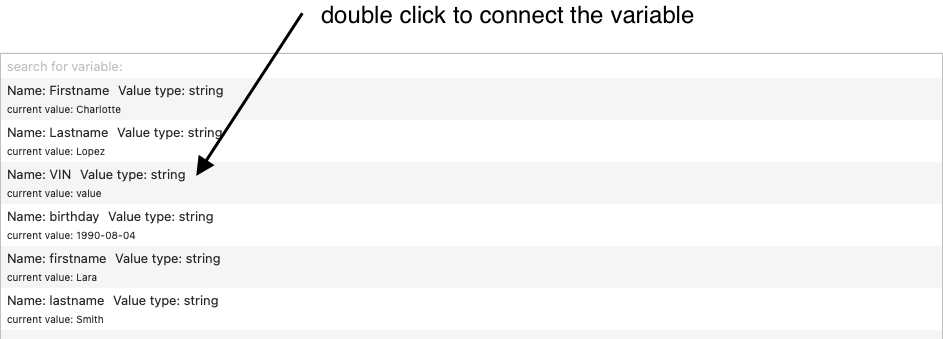
Double click the variable to get the variable connected to your RandomValueProvider
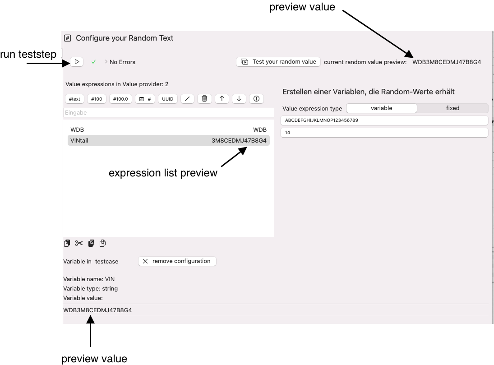
When you click Run teststep now, you will see synchronized value for:
- RandomValueProvider preview
- the expression list preview
- the connected variable value.
If you want, you can verify the variable value itself in the sidebar navigation, which we may need to make visible first, depending on the current state, you may toggle to show the sidebar here:
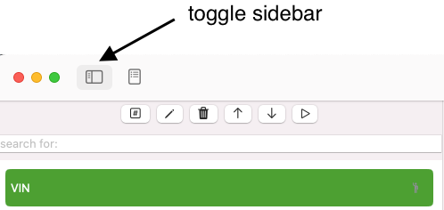
When the sidebar is visible, you will see the variables list, and in this, you'll find your connected and updated variable.
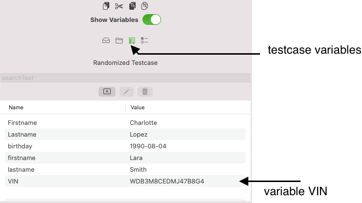
Create a RandomizedValuelist Teststep
Takes a CSV file as input and randomizes data in this file to provide variables values.
Steps to create a RandomizedValuelist Teststep
The RandomizedValuelist Teststep expects a CSV file as input. You will find a sample walkthrough in Steps to create a CSV file with Apple® Numbers
Select the button create new RandomizedValuelist Teststep
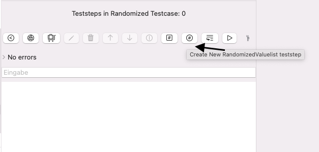
This opens a dialog that allows you to enter the name of the teststep. You can choose to enter this name at any point later in time.
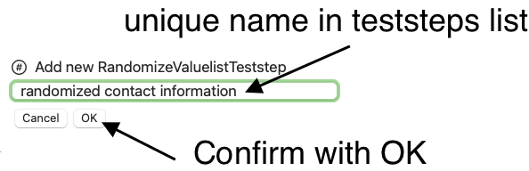
When you confirm with OK the dialog disappears and creates a new entry in the teststep list. When you select the new teststep, the RandomizedValuelist Teststep editor opens. See details to configure the randomized list value in Randomizedvaluelist Teststep View
If you have a CSV file that you want to import, you may want to [Create a manual RandomizedValuelist Teststep]
Steps to create a CSV file with Apple Numbers
This short tutorial demonstrates a very basic CSV file that serves as input. It provides a small set of contact information. We assume we have a limited set of data and would like to create randomized combination of the data. e.g. Column 1 - Row 1 with Column 2 Row 7....

We created our limited test data in Apple® Numbers,but it does not really matter, what source the CSV is created from. We cover Apple® Numbers here to show how this can done.
Export the table
- Select the menu File
- Select the menu item Export To
- Select the sub menu item CSV...

This opens a two steps wizard that allows you to customize export settings.
- Choose CSV
- Keep include table names unchecked
- Under Advanced Options make sure, Unicode (UTF-8) is selected
- Click Next...

Select your favorite destination folder. In the screenshot, this is the personal download folder.

When you open Finder you will find the CSV file in the folder downloads.